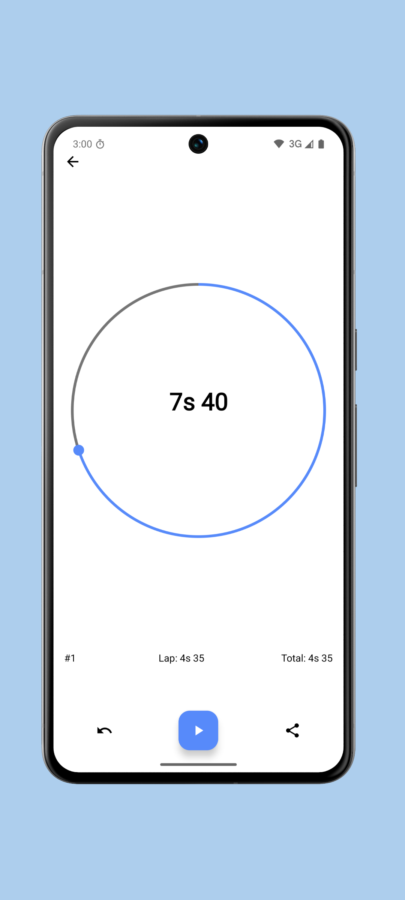

Chronos 用了三天：终于找到一款重启不丢闹钟的安卓闹钟
一款主打开机自恢复的开源安卓闹钟，实测重启不丢、计时器温和、秒表计圈实用，上手体验给你拆明白。
上周三凌晨手机自动安装了系统安全补丁并重启——早上睁眼发现闹钟没响，迟到了半小时。之前用的那几款闹钟我都试过手动重启验证，结果五花八门：有的恢复了开关但时间错乱，有的直接把整个闹钟列表清空，还有一次更离谱，重启后只显示一个残缺的闹钟条目，标签和铃声全丢了。朋友群里有人推 Chronos——去Chronos官网逛了一下发现它把「重启不丢闹钟」当卖点做了专门优化——我就去下了一份 APK 装了。
初印象：小而干净的三件套
安装过程出乎意料地顺——从官方下载拿的 APK 只有 3.5MB 左右，点一下就装完了。装完的第一眼界面很干净，底部三个标签分别是闹钟、计时器、秒表，没有首页推荐、没有开屏广告、没有引导弹窗，中间一个大大的悬浮加号按钮直接让你新建闹钟。说实话，安卓应用能给这种「零废话」第一印象的不多，大部分一打开先弹三四个权限请求加一个欢迎引导页。

权限方面它倒是没含糊——开机完成权限、通知权限、精确闹钟权限，该要的一样不少，而且用途都写得很清楚。尤其那个开机完成权限，普通闹钟应用可能随便勾一下就申请了，Chronos 在权限说明里直接告诉你：我拿这个权限就是为了「手机启动时自动重新调度所有闹钟」。这个坦诚劲儿加分。
开机自恢复：真的靠谱吗？
这是我装它的核心原因，所以装完第一时间就做了测试。我设了三个闹钟：工作日 7:00 的早班闹钟（带标签「早班」和一个渐强铃声）、周末 9:00 的懒觉闹钟、还有一个临时加班用的 14:00 闹钟。然后手动重启手机。
重启过程大概花了 40 秒，系统起来后我直接点开 Chronos——三个闹钟全在，开关状态没动，标签没丢，铃声设置原样保留，顶部的「下一个闹钟」倒计时也在正常更新，不是那种显示错误的占位符。我又点进每个闹钟的设置页确认了一遍，重复周期、震动模式、贪睡时长，一个字段都没乱。
说实话这个体验比我预期的好太多。之前用过一个声称支持开机恢复的闹钟，重启后只能恢复开关状态，时间设置经常自己变成默认值，还要手动一个个调回去。Chronos 这块做得确实扎实。不过它也有一个承认的例外情况：如果系统启动特别慢，闹钟重排完成的时刻可能延后一两分钟——比如重启后系统花了三分钟才完全就绪，那开机后 5 分钟内要响的闹钟可能就赶不上。这个属于极端边界，大部分日常场景不用担心。还有一个要注意的是，卸载重装会清空数据，这个不是 Chronos 的问题，安卓应用的通用规则，换机迁移记得用导入导出功能。
计时器：番茄和午休的好搭档
除了闹钟，Chronos 内置了独立的计时器功能——就是那种「N 分钟后提醒我」的倒计时，跟闹钟的绝对时刻触发是两回事。我日常用它干三件事：番茄工作法的 25+5 节奏、午休 20 分钟叫醒、还有厨房煮泡面三分钟。
番茄的时候设 25 分钟倒计时，到点弹全屏提醒。这里有个细节挺讨喜：计时器的震动模式是独立的，可以设成 Heartbeat 那种温和的心跳节奏，不像闹钟默认的渐强铃声那么猛——毕竟番茄中断是常态，用不着被吓一跳。午休也用这个 20 分钟倒计时，震动叫醒比闹钟温和得多，起来不晕。
计时器跟闹钟的分野挺清晰：闹钟设好就一直在那里，每天按点触发；计时器是一次性的，到点响完就结束。两者共用同一个铃声库但各自可以设默认铃声，不会互相干扰。我把计时器默认铃声设成一个短促的提示音，跟闹钟的渐强旋律区分开，听到响就知道是哪种提醒来了。
秒表计圈：晨跑终于不用在手上画杠
周末晨跑绕操场五圈，之前每次跑都得在手上画五根杠数圈，跑着跑着就忘了跑到第几圈了。这次试了 Chronos 的秒表计圈功能——跑一圈按一下左下角的计圈按钮，界面立刻给这一圈记一个 #1、#2 编号，底部同时显示 Lap（单圈时间）和 Total（累计总时间）。

第一圈结束时 Lap 和 Total 是一样的，第二圈起两者开始拉开差距——Lap 显示你这一圈跑了多久，Total 显示从开始到现在总共花了多久。跑完五圈最后一次按计圈，总成绩和每一圈的单独时间都列在下面，直接分享到微信给跑友，不用自己手抄数字。
功能本身不复杂，就是秒表加一个计圈按钮，但做对了事情：圈次编号清晰、单圈和总时间分开展示、支持一键分享。健身间歇训练也能用——动作 45 秒、休息 90 秒，每换一个阶段按一下计圈，复盘的时候能看到每一组的动作时长有没有缩短。
有没有什么地方不习惯？
有，两个小地方。
第一，APK 安装的时候安卓 8.0 以后要给文件管理器开「允许安装未知应用」权限。这个不是 Chronos 的问题，安卓安全策略就是这样，但每次换新设备第一次装 APK 都得翻一下设置，有点烦。去Chronos文档翻了一下，安装失败排查里把这个情况放在了第一条，说明踩过坑的人不少。
第二，默认铃声偏温柔。如果是晚睡晚起的夜猫子，可能听不到渐强旋律就睡过去了——我个人的闹钟铃声是自己换的一个更响的，这个问题很好解决，进设置改一下就行。
适合谁，不适合谁？
适合的人挺明确：经常重启手机清理状态的安卓用户，如果你有每周重启一次手机的习惯，之前用过的闹钟可能每次重启都要重设一遍，Chronos 这个开机自恢复就是刚需；需要多场景计时的人，番茄工作法、厨房烹饪、运动间歇，一个应用全搞定；开源偏好者，Chronos 的资料在公开仓库里都能找到，有什么想定制的可以自己改。
不太适合的也说清楚：如果你想要那种按地理位置触发闹钟（到家自动提醒）、按天气变铃声、跟日历联动的超级闹钟，Chronos 可能满足不了——它就是纯纯粹粹的闹钟+计时器+秒表三件套，没那些花哨的高级功能。还有只在 iPhone 上用的朋友，目前看不到 iOS 版本的信息。
收尾
用了三天，重启测试过两次、番茄计时用了十几次、晨跑秒表用了一次，目前没有出现过什么 bug。闹钟该响的时候响，该不响的时候不响，重启完还在。说实话，一个闹钟应用能把「重启不丢」这件事做扎实，已经赢过市场上一半以上的同类产品了。毕竟闹钟最基本的功能就是「到点叫醒你」，如果重启一下就失效了，那其他花里胡哨的功能再强大也白搭。对了，Chronos 的完整资料在几个大仓库都能拿到：GitHub 上有完整的文档快照，Gitee 和 GitCode 也有镜像备份，国内访问哪个顺手用哪个就行。